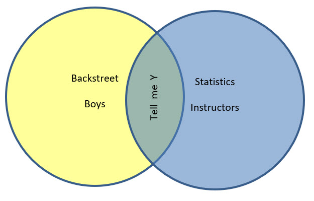
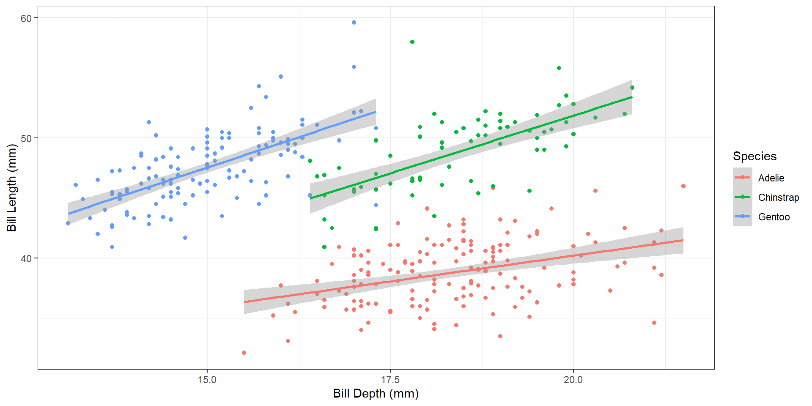
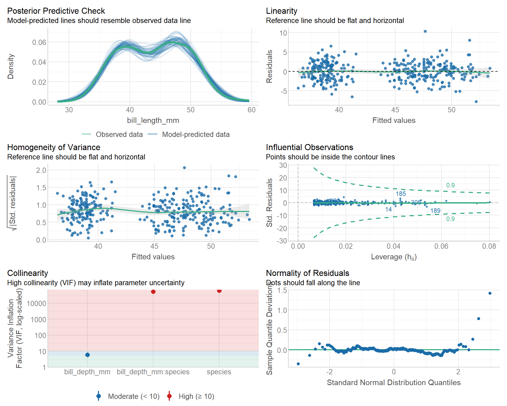
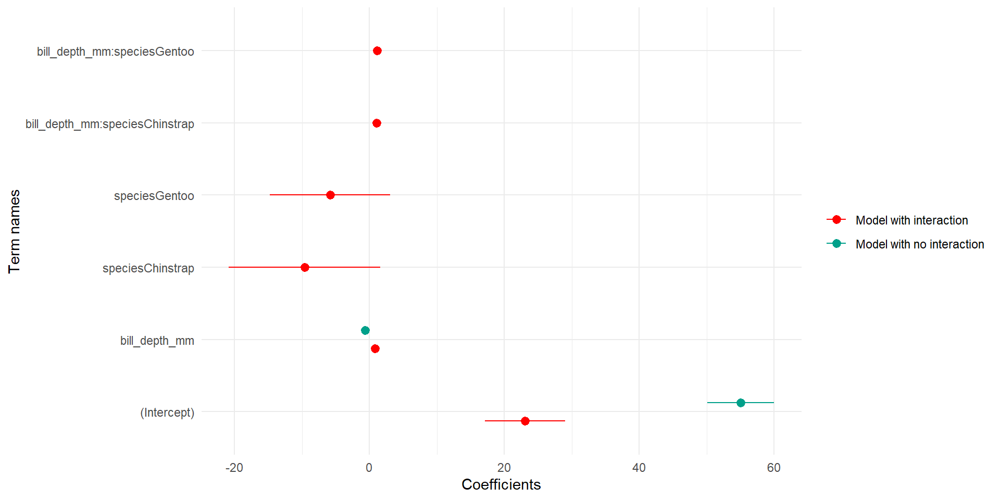
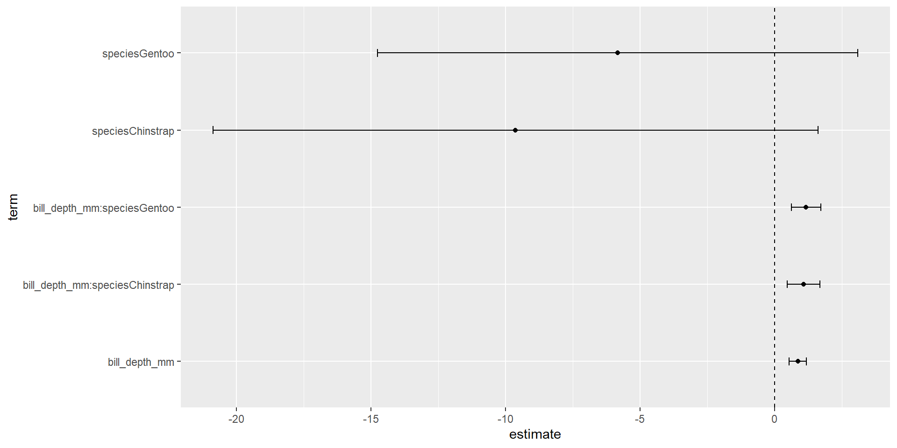
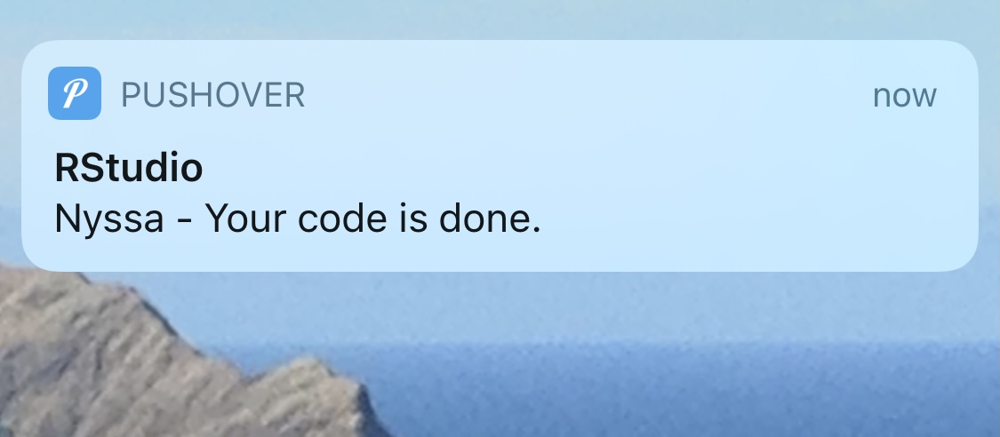
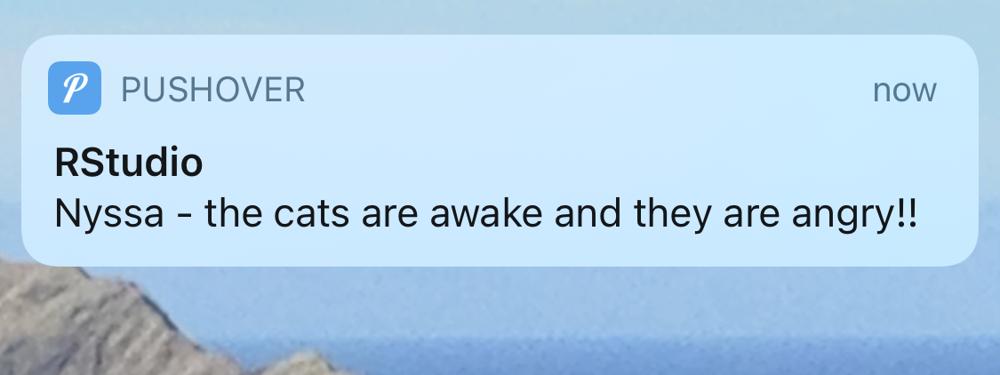

install.packages("modelsummary") # to show model output
install.packages("tidymodels") # for tidy models
install.packages("broom") # for clean model output
install.packages("flextable") # to look at model results in a nice table
install.packages("performance") # to check model assumptions
install.packages("see") # needs to be installed, but does not need to be loaded, required for performance
install.packages("wesanderson") # color palettes for the modelplotData Fundamentals in R (OCN 682)
Intro to Models
Dr. Nyssa Silbiger
UH Fall 2026
2026-10-28
Intro to Models
- Intro to basic linear modeling
- Viewing results in base R, broom, and modelsummary
- Running many models at the same time with purrr
- Intro to tidymodels

Set up your script
Install these packages once (do not run this every time you knit):


Two penguins datasets
R 4.5+ includes a built-in penguins dataset with shorter column names (e.g. bill_len). Load {palmerpenguins} so the column names match these slides (bill_length_mm).
Intro to basic linear modeling
This is NOT a stats class
Make sure you understand the theory behind the statistics you use before you use them. Even though we spent the semester learning about cleaning and visualization, you MUST use statistics to interpret your data.
Today I am going to show you a few packages that help with modeling. There are TONS of packages, and you should choose what makes the most sense for your data.
Anatomy of a basic linear model
To run a simple linear model use the following formula:
lm = linear model, y = dependent variable, x = independent variable(s), df = dataframe. Read this as y is a function of x.
Model the penguin dataset
We’ve tidied and visualized the data and have our hypotheses. Now we can start modeling.

Check model assumptions with {performance}
ALWAYS check the assumptions of your specific model. Make sure you know what your model is doing behind the scenes and that you meet all assumptions before interpreting your results. The {performance} package makes this easy.

View results: base R
ANOVA table
Analysis of Variance Table
Response: bill_length_mm
Df Sum Sq Mean Sq F value Pr(>F)
bill_depth_mm 1 561.6 561.6 93.965 < 2.2e-16 ***
species 2 7460.3 3730.2 624.151 < 2.2e-16 ***
bill_depth_mm:species 2 134.3 67.1 11.232 1.898e-05 ***
Residuals 336 2008.1 6.0
---
Signif. codes: 0 '***' 0.001 '**' 0.01 '*' 0.05 '.' 0.1 ' ' 1anova() uses sequential (Type I) sums of squares
Each term is tested after the terms listed before it, so with unbalanced data (like penguins) the order of terms in the formula changes the results. Type II or Type III tests from the {car} package don’t depend on order: car::Anova(Peng_mod, type = 2). Which type is appropriate is a stats question. Ask your stats class or advisor, and always report which one you used.
View results: base R
Coefficients (effect size) with error
Call:
lm(formula = bill_length_mm ~ bill_depth_mm * species, data = penguins)
Residuals:
Min 1Q Median 3Q Max
-7.7888 -1.5415 0.0575 1.5873 10.3590
Coefficients:
Estimate Std. Error t value Pr(>|t|)
(Intercept) 23.0681 3.0165 7.647 2.18e-13 ***
bill_depth_mm 0.8570 0.1641 5.224 3.08e-07 ***
speciesChinstrap -9.6402 5.7154 -1.687 0.092590 .
speciesGentoo -5.8386 4.5353 -1.287 0.198850
bill_depth_mm:speciesChinstrap 1.0651 0.3100 3.435 0.000666 ***
bill_depth_mm:speciesGentoo 1.1637 0.2789 4.172 3.84e-05 ***
---
Signif. codes: 0 '***' 0.001 '**' 0.01 '*' 0.05 '.' 0.1 ' ' 1
Residual standard error: 2.445 on 336 degrees of freedom
(2 observations deleted due to missingness)
Multiple R-squared: 0.8024, Adjusted R-squared: 0.7995
F-statistic: 272.9 on 5 and 336 DF, p-value: < 2.2e-16Interpreting coefficients in an interaction model
R picks a reference level: the first factor level alphabetically, here Adelie. Every other coefficient is relative to it.
| Term | What it means |
|---|---|
| (Intercept) | Adelie bill length when bill depth = 0 |
| bill_depth_mm | Slope for Adelie only |
| speciesChinstrap, speciesGentoo | Difference in intercept from Adelie (at bill depth = 0) |
| bill_depth_mm:speciesChinstrap, bill_depth_mm:speciesGentoo | Difference in slope from Adelie |
To get each species’ slope, add the interaction term to the reference slope:
- Adelie: 0.86 mm per mm of bill depth
- Chinstrap: 0.86 + 1.07 = 1.93
- Gentoo: 0.86 + 1.16 = 2.02
Don’t read bill_depth_mm as “the” effect of bill depth
With an interaction, there is no single slope. Bill depth = 0 is also far outside the data, so the intercept and species terms aren’t meaningful on their own.
View results with broom
These results are not in a clean form, and it is hard to extract specific values. Using {broom} we can “tidy” the results so they are easier to view and extract. tidy(), glance(), and augment() clean up your results.
# A tibble: 6 × 5
term estimate std.error statistic p.value
<chr> <dbl> <dbl> <dbl> <dbl>
1 (Intercept) 23.1 3.02 7.65 2.18e-13
2 bill_depth_mm 0.857 0.164 5.22 3.08e- 7
3 speciesChinstrap -9.64 5.72 -1.69 9.26e- 2
4 speciesGentoo -5.84 4.54 -1.29 1.99e- 1
5 bill_depth_mm:speciesChinstrap 1.07 0.310 3.44 6.66e- 4
6 bill_depth_mm:speciesGentoo 1.16 0.279 4.17 3.84e- 5View results with broom
tidy() also works on an ANOVA table:
# A tibble: 4 × 6
term df sumsq meansq statistic p.value
<chr> <int> <dbl> <dbl> <dbl> <dbl>
1 bill_depth_mm 1 562. 562. 94.0 9.38e- 20
2 species 2 7460. 3730. 624. 7.12e-114
3 bill_depth_mm:species 2 134. 67.1 11.2 1.90e- 5
4 Residuals 336 2008. 5.98 NA NA View results with broom
The glance() function extracts R-squared, AIC, and other model-level statistics.
# A tibble: 1 × 12
r.squared adj.r.squared sigma statistic p.value df logLik AIC BIC
<dbl> <dbl> <dbl> <dbl> <dbl> <dbl> <dbl> <dbl> <dbl>
1 0.802 0.799 2.44 273. 5.69e-116 5 -788. 1590. 1617.
# ℹ 3 more variables: deviance <dbl>, df.residual <int>, nobs <int>View results with broom
The augment() function adds residuals and predicted values to your original data. It requires both the model and the data.
# A tibble: 342 × 10
.rownames bill_length_mm bill_depth_mm species .fitted .resid .hat
<chr> <dbl> <dbl> <fct> <dbl> <dbl> <dbl>
1 1 39.1 18.7 Adelie 39.1 0.00553 0.00719
2 2 39.5 17.4 Adelie 38.0 1.52 0.0107
3 3 40.3 18 Adelie 38.5 1.81 0.00716
4 5 36.7 19.3 Adelie 39.6 -2.91 0.0107
5 6 39.3 20.6 Adelie 40.7 -1.42 0.0295
6 7 38.9 17.8 Adelie 38.3 0.577 0.00797
7 8 39.2 19.6 Adelie 39.9 -0.666 0.0137
8 9 34.1 18.1 Adelie 38.6 -4.48 0.00690
9 10 42 20.2 Adelie 40.4 1.62 0.0221
10 11 37.8 17.1 Adelie 37.7 0.0768 0.0136
# ℹ 332 more rows
# ℹ 3 more variables: .sigma <dbl>, .cooksd <dbl>, .std.resid <dbl>Missing values are dropped silently
penguins has 344 rows, but augment() returns 342. lm() quietly drops any row with an NA in the model variables. Always check how many observations your model actually used, e.g. nobs(Peng_mod).
Results in {modelsummary}
{modelsummary} creates tables and plots to summarize statistical models and data in R.
Model summary
- modelsummary(): regression tables with side-by-side models
- modelsummary_wide(): regression tables for categorical response models or grouped coefficients
- modelplot(): coefficient plots
Data summary
- datasummary(): multi-level cross-tabs and data summaries
- datasummary_balance(): balance tables with subgroup statistics (“Table 1”)
- datasummary_correlation(): correlation tables
- datasummary_skim(): quick overview (“skim”) of a dataset
- datasummary_df(): turn dataframes into nice tables with titles and notes
Results in {modelsummary}
Export summary tables to Word, Markdown, or TeX. You can also modify the tables to make them publication quality.
Let’s compare Peng_mod with a model that does not have species as an interaction term.
# New model without the interaction
Peng_mod_noX <- lm(bill_length_mm ~ bill_depth_mm, data = penguins)
# Make a named list of models
models <- list("Model with interaction" = Peng_mod,
"Model with no interaction" = Peng_mod_noX)
# Save the results as a .docx
modelsummary(models, output = here("Week_13", "output", "table.docx"))Modelplot
Canned coefficient modelplots. This uses the {wesanderson} package.

Many models with purrr, dplyr, and broom
Let’s say you want to plot and compare many models at the same time. Instead of using species as an interaction term, let’s make an individual model for every species. To keep things fresh, these models use body mass as the predictor (bill_length_mm ~ body_mass_g) instead of bill depth.
We can make a dataframe where each row holds the data for one species, then use map() functions to run the same model on every dataset. We will go step by step.
Many models with purrr, dplyr, and broom
Map a model to each of the groups in the list:
# A tibble: 3 × 3
species data fit
<fct> <list> <list>
1 Adelie <tibble [152 × 6]> <lm>
2 Gentoo <tibble [124 × 6]> <lm>
3 Chinstrap <tibble [68 × 6]> <lm> Show the list of models
[[1]]
Call:
lm(formula = bill_length_mm ~ body_mass_g, data = .x)
Coefficients:
(Intercept) body_mass_g
26.994139 0.003188
[[2]]
Call:
lm(formula = bill_length_mm ~ body_mass_g, data = .x)
Coefficients:
(Intercept) body_mass_g
26.739548 0.004091
[[3]]
Call:
lm(formula = bill_length_mm ~ body_mass_g, data = .x)
Coefficients:
(Intercept) body_mass_g
32.174193 0.004463 Many models with purrr, dplyr, and broom
View the results. First, mutate the models so we have a tidy coefficient dataframe (using tidy()) and a tidy model-results dataframe (using glance()):
# A tibble: 3 × 5
species data fit coeffs modelresults
<fct> <list> <list> <list> <list>
1 Adelie <tibble [152 × 6]> <lm> <tibble [2 × 5]> <tibble [1 × 12]>
2 Gentoo <tibble [124 × 6]> <lm> <tibble [2 × 5]> <tibble [1 × 12]>
3 Chinstrap <tibble [68 × 6]> <lm> <tibble [2 × 5]> <tibble [1 × 12]>Many models with purrr, dplyr, and broom
Next, select what we want to show and unnest it back into a dataframe:
# A tibble: 6 × 6
species term estimate std.error statistic p.value
<fct> <chr> <dbl> <dbl> <dbl> <dbl>
1 Adelie (Intercept) 27.0 1.48 18.2 1.06e-39
2 Adelie body_mass_g 0.00319 0.000398 8.01 2.95e-13
3 Gentoo (Intercept) 26.7 2.11 12.7 5.45e-24
4 Gentoo body_mass_g 0.00409 0.000413 9.91 2.68e-17
5 Chinstrap (Intercept) 32.2 3.44 9.34 1.07e-13
6 Chinstrap body_mass_g 0.00446 0.000918 4.86 7.48e- 6Unnest one list-column at a time
tidy() and glance() both return columns named statistic and p.value, and they have different numbers of rows, so you cannot unnest them together. Unnest the coefficients, or use glance() on its own.
Other very common stats packages
- stats: general (lm) and generalized (glm) linear models, already loaded with base R
- lmer: mixed effects models
- lmerTest: getting p-values from lmer
- nlme: non-linear mixed effects models
- mgcv, gam: generalized additive models
- brms, rstan, and many more: Bayesian modeling
- lavaan, piecewiseSEM: structural equation models
- rpart, randomForest, xgboost, and more: machine learning models
And so many more! See R4DS (1st ed.) model basics and Tidy Modeling with R for more modeling tips.
Also see more on nested models here and R4DS (1st ed.) many models.
{tidymodels}
Like almost everything else, there is a modeling package that uses tidyverse language to create models. It is called {tidymodels}. I have not used it myself, but it looks useful, especially for machine-learning style modeling. For a single lm() it adds steps without adding much; its real value is a consistent interface for predict(), resampling, tuning, and workflows across many model types.
In tidymodels you start by specifying the functional form using the parsnip package. For us, that is a linear regression:
{tidymodels}
Next, set the engine for the type of linear regression. You could use OLS, Bayesian, or several other options. We will stick with OLS:
{tidymodels}
Next, add the model fit:
parsnip model object
Call:
stats::lm(formula = bill_length_mm ~ bill_depth_mm * species,
data = data)
Coefficients:
(Intercept) bill_depth_mm
23.068 0.857
speciesChinstrap speciesGentoo
-9.640 -5.839
bill_depth_mm:speciesChinstrap bill_depth_mm:speciesGentoo
1.065 1.164 {tidymodels}
Last, tidy the output. Now we can pipe it into plots and more. A nice, tidy way to model.
# A tibble: 6 × 5
term estimate std.error statistic p.value
<chr> <dbl> <dbl> <dbl> <dbl>
1 (Intercept) 23.1 3.02 7.65 2.18e-13
2 bill_depth_mm 0.857 0.164 5.22 3.08e- 7
3 speciesChinstrap -9.64 5.72 -1.69 9.26e- 2
4 speciesGentoo -5.84 4.54 -1.29 1.99e- 1
5 bill_depth_mm:speciesChinstrap 1.07 0.310 3.44 6.66e- 4
6 bill_depth_mm:speciesGentoo 1.16 0.279 4.17 3.84e- 5Pipe to a plot
linear_reg() |>
set_engine("lm") |>
fit(bill_length_mm ~ bill_depth_mm * species, data = penguins) |>
tidy(conf.int = TRUE) |> # adds 95% confidence intervals
filter(term != "(Intercept)") |> # the intercept dwarfs the other terms
ggplot(aes(x = estimate, y = term)) +
geom_vline(xintercept = 0, linetype = "dashed") +
geom_point() +
geom_errorbar(aes(xmin = conf.low, xmax = conf.high), width = 0.1)
Total awesome R package: {pushoverr}
{pushoverr} sends push notifications to your phone from R. Does your code take forever to run, and do you want to go on a run yourself? Have it send your phone or smartwatch a notification when it’s done!
You will have to follow the directions on the website to install the app on your phone, but then one line of code does it:

Total awesome R package: {pushoverr}

This is your last lecture…

Class evals
Please take about 10 minutes to fill out the class evals. These are VERY important to me and the department.
Thanks!
Slides created via Quarto
Many slides modified from R4DS and Advanced R
OCN 682 | Week 13 | Intro to Models